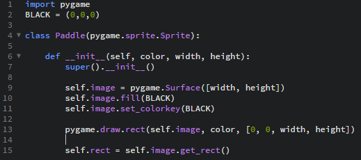
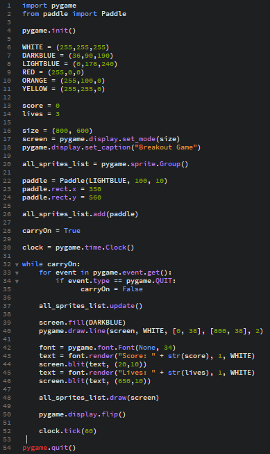

Dodajanje igralca
Tukaj spet začnemo z import pygame, in dodal sem še črno barvo.
Najprej sem moral dodati Paddle(očitno se tako igralec v tej igri tako imenuje), da se bo prikazal kot "Sprite".
class Paddle(pygame.sprite.Sprite),to je ukaz.
Nato dodamo še naslednje ukaze za ta razred
- def __init__(self, color, width, height):
- super().__init__()
- self.image = pygame.Surface([width, height])
- self.image.fill(BLACK)
- self.image.set_colorkey(BLACK)
- pygame.draw.rect(self.image, color, [0, 0, width, height])
- self.rect = self.image.get_rect()
Ta program sem shranil kot paddle.py
Tako bi moral izgledati program paddle.py

Sedaj se moramo vrniti v main.py
Pod ukazom import pygame dodamo še "from paddle import paddle"
Pod ukazi, ki nam bodo odprli program v novem oknu zapišemo naslednje ukaze:
- all_sprites_list = pygame.sprite.Group(), je list, ki bo vseboval vse Sprite, ki jih bomo uporabljali.
- paddle = Paddle(LIGHTBLUE, 100, 10), ta ukaz nam pove barvo igralca
- paddle.rect.x = 350, ta ukaz pove kako daleč od levega roba se nahaja
- paddle.rect.y = 560, ta pa nam pove kako visoko se nahaja
Paddle moramo dodati v naš list, toraj napišemo še "all_sprites_list.add(paddle)
V zanko dodamo še ukaza:
- all_sprites_list.update()
- all_sprites_list.draw(screen)
Na koncu bi moralo takole zgledati:
